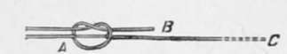

Section V. Fly-Fishing
Description
This section is from the book "American Game Fishes", by W. A. Perry. Also available from Amazon: American Game Fishes: Their Habits, Habitat, and Peculiarities; How, When, and Where to Angle for Them.
Section V. Fly-Fishing
Tackle for angling may be conveniently divided into three categories: 1. Tackle for top-water fishing-fly-fishing with artificial insect.
2. Tackle for mid-water fishing-trolling, bait-fishing, live-baiting, etc.
3. Tackle for bottom-fishing-fishing for Bull-heads, Eels, Suckers, etc.
The distinctions between the tackles used for these different styles are not arbitrary, of course. They are merely adopted for convenience, and to aid the tyro in referring.
Fig- 15.
Fig. 16.
(1) Tackle for Top-water Fishing.-(a)-the Fly.- Fly-fishing with the artificial fly is par excellence the chief of all sports-and the chief item of the necessary outfit is, without question, the artificial fly.
I take it for granted that all of my readers are familiar with the appearance of an artificial fly, as made after the conventional pattern. However, to bring the ensemble more vividly before their notice, fig. 16 is interpolated. That it is not at all like a fly, in detail, is nothing to my present purpose. It is what Dudley Warner terms a "conventionalized creation, " not an imitation ; and it undoubtedly does catch fish !
There is probably no more fascinating work than the making of these dainty fur-and-feather lures; and I shall not waste time in further preface, but, assuming that the reader desires to learn how to "dress" a fly, I beg him to at once begin with me the construction of his first "brown hackle"-which I choose as being the simplest form of so-called artificial fly.
To Make the "Pennell" Brown Hackle.-Take a hackle (proportioned to the size of the hook) and having bound the hook on with waxed silk, lay it on the end of the shank, as shown at fig. 17, with the under concave side upward. Tie it securely. Then take the tip between the forefinger and thumb of the right hand, and take several turns around the hook-shank (see fig 18); tie as shown. Let the turns be sufficient in number to allow of as much remaining hackle as is shown in fig 18. This hackle is then bound tightly side by side of the shank, and a double hitch secures it at a point about opposite the barb. The projecting remainder of the hackle forms a tail.

Fig. 17.
This is the simplest fly made, and it can be manufactured from almost any small feather in fifty seconds-a boon to the angler in the woods who prefers the fly to the bait.
By John Harrington Keene.
Author of "Fly-Fishing and Fly-Making," etc.
How To Make The Ordinary Brown Hackle
Here I must diverge a little, and explain a very important labor-saving method of preparing the hackle for all kinds of flies (and necessarily of course for the "brown hackle").
It is easy to see, if one takes the hackle fresh from the rooster's neck, that it is almost impossible to roll it evenly round the shank of a hook, unless it is done as recommended for the "Pennell " hackle, and this method is far from neat, or satisfactory in any way, when applied to the finer-winged
Fig. 18.
Fig. 19.
Fig. 20.
flies. The fibers are apt to get criss-crossed, and entangled, one with the other, and the result is, a mass of fibers as ineffectual as unsightly. To obviate this, the hackle is taken, and after stripping off the fluffy feathers from the butt-end, the fibers are stroked carefully in the reverse direction until they resemble fig. 19.
The next process is to attach a pair of pincers to each end as in fig. 20. Now let an assistant take A firmly whilst the tyro grasps B in his left hand. Passes are now made on each side of the mid-rib, as shown, with the forefinger of the right hand, bringing the nail close to the roots of the fibers. This proceeding doubles them back and downward until they assume the position shown in fig. 21. This "turning of the hackle" is one of the trade "kinks" which is here fully explained in a printed volume for the first time.
Fig. 21.
Fig. 22.
But to resume the making of the "Brown Hackle." The hook is duly attached to the snell, and the body of the fly formed for which see figs. 18, 19, p. 468, and the hackle turned ready for attachment. Fig. 22 shows where this attachment is made. The tip with the fibers turned back is placed as indicated and securely fastened-the tying silk coming up toward the end of the shank being retained between the gut and the shank as shown in fig. 22. Then the hackle is wound in a spiral whose coils are close side by side, and finally tied at the end of the shank by means of two half-hitches. The final result is shown at fig. 23, and is a very killing lure, wherever it is presented, to any and all fish that take the fly. Of course the size of hook varies from the smallest 14 or 16 for Pennsylvania Trout to the number 1-0 and 2-0 for the Black Bass of Michigan waters.
When the tyro has made a few dozens of these two hackles he will be prepared to learn how to make a fly like fig. 16.
Fig. 23.
Continue to: